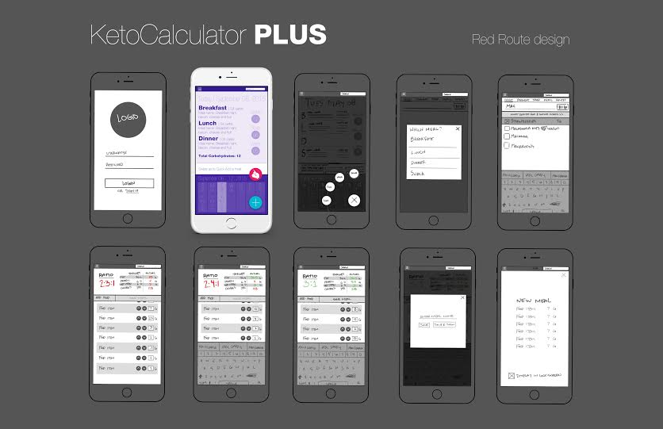

The user is a parent with a child diagnosed with pediatric epilepsy who needs assistance in administering the ketogenic diet for seizure control.
The ketogenic diet is a high fat, low carb diet that that puts the body into a state of ketosis (when the body gets energy from burning fat rather than carbs).
When using the Ketogenic Diet as a treatment for Epilepsy, the meals must strictly adhere requirements set by the nutritionist. This often means measuring food ingredients down to the tenth of a gram. Parents must also keep a diary of each meal, Ketone levels (to see that ketosis is maintained) as well as seizure counts. This helps the both the neurologist and the nutritionist gain insight into what might be helping with seizure control and what is not helping.
Extensive qualitative user research (primarily user feedback, user observation, and interviews) as well as competitive analysis of the only (official) keto calculator lead to a period of discovery where I could gain insight into the users' needs.
I also did research to see if there were any design solutions for other food trackers that may work successfully with this keto calculator.
Next I set about exploring the different possibilities through various sketches and wireframes.
Below is a Red Route (likely the most common path) design for this app. I used this Red Route Design panel as a storyboard when talking to some potential users about some of the features that this app might have. I included one high fidelity screen so that potential users could see the potential look/feel of the app. During followup interviews where I showed a high fidelity frame, I also tested various color schemes. A mostly purple theme tested the best of the several color iterations, as it holds some sentimental value to users. Purple is the official Epilepsy awareness color.
This is still a work in progress. I will update this project as more work is completed.